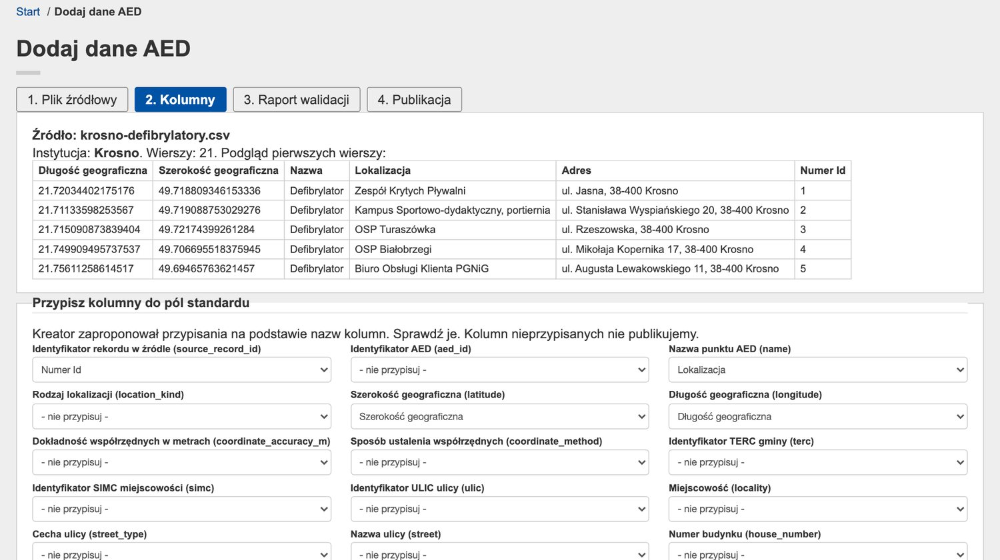
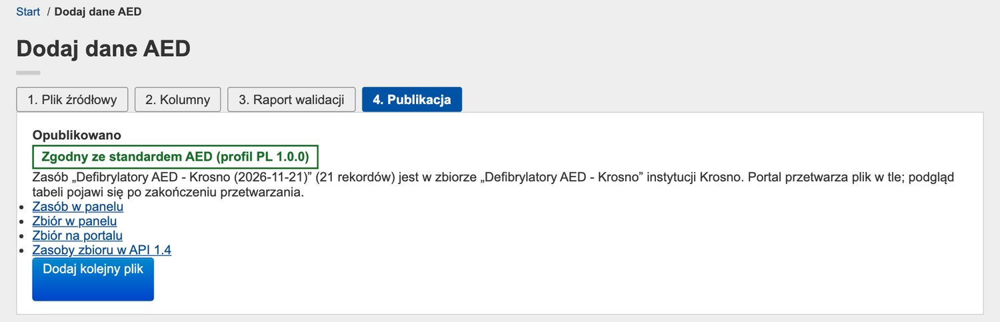
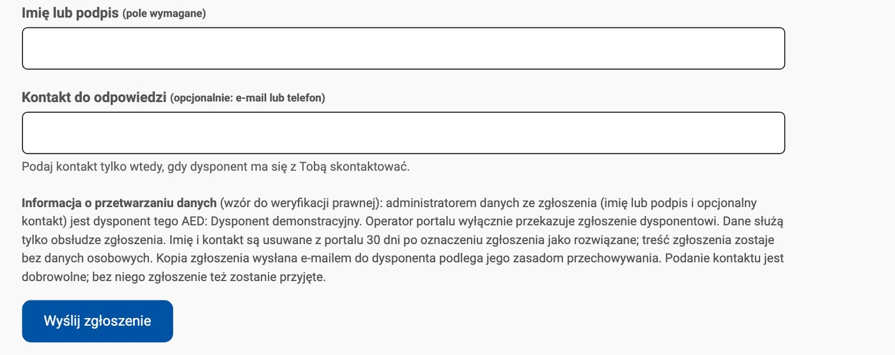
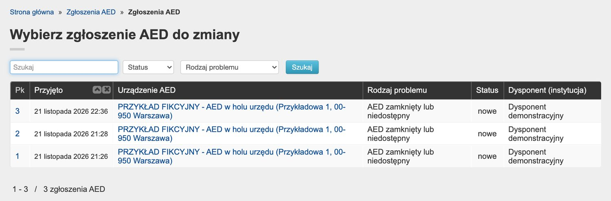
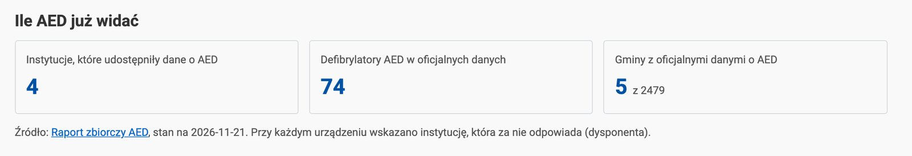
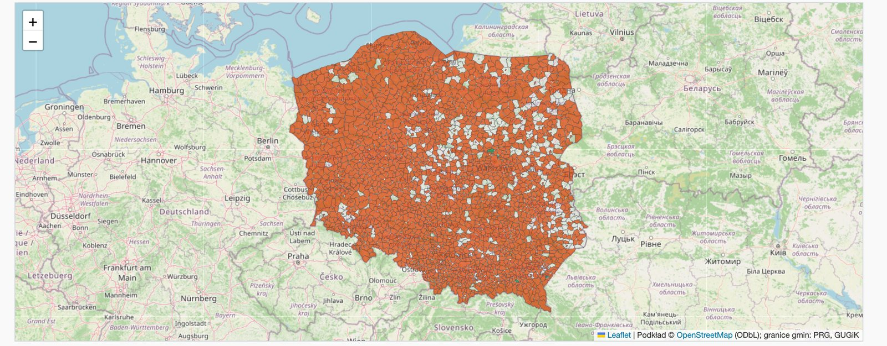

Każdy AED w Polsce w jednym otwartym zbiorze na dane.gov.pl.
Dysponent publikuje dane o swoich defibrylatorach we wspólnym standardzie. Portal sam składa z nich ogólnopolski Raport zbiorczy AED: z mapą, API i wskazaniem, kto odpowiada za każde urządzenie.
HackNation 2026 · zadanie „Misja AED - Dane na ratunek”, Ministerstwo Cyfryzacji Zespół jednoosobowy · kod: github.com/PatrickMade/hacknation-2026-aed
mcod.local/pl/aed · strona akcji w portalu
Zrzut z działającego prototypu. Pomarańczowe: 2123 gminy, w których defibrylatory zna tylko OpenStreetMap. Zielone: 5 gmin z oficjalnymi danymi.
Mapa SercKryterium · zgodność z tematem wyzwania · 15%
Gdy serce staje, liczy się minuta. A dziś nikt nie wie, gdzie są wszystkie AED.
Świadek dzwoni pod 112. Dyspozytor chce wskazać najbliższy defibrylator. Wytyczne ERC 2025 mówią, że do tego potrzebny jest aktualny rejestr wszystkich publicznie dostępnych AED1. W otwartych danych państwa takiego rejestru dziś nie ma.
3-6%
mniej szans na przeżycie z każdą minutą opóźnienia defibrylacji1
18 298
punktów AED w Polsce znają wolontariusze OpenStreetMap2
74
AED da się pobrać z dane.gov.pl: cztery miasta, cztery układy pliku3
1 Wytyczne Europejskiej Rady Resuscytacji 2025, podstawowe zabiegi resuscytacyjne u dorosłych, wyd. polskie (prc.krakow.pl). 2 Eksport OpenAEDMap dla Polski z 21.11.2026, ODbL. 3 Zbiory 3624, 4955, 4581 i 40593 w dane.gov.pl, kopie z 21.11.2026.
2 / 14
Mapa SercKryterium · zgodność z tematem wyzwania · 15%
Cztery miasta opublikowały AED w czterech różnych układach. Po Mapie Serc układ jest jeden.
Dziś: prawdziwe początki plików z dane.gov.pl
Krosno · CSV, zbiór 3624
Długość geograficzna,Szerokość geograficzna, Nazwa, Lokalizacja, Adres, Numer Id
Marki · CSV, zbiór 4955
"52.326697, 21.107557,""Defibrylator"",""Urząd Miasta Marki "",..."
Cały wiersz w jednej komórce; pod nagłówkiem „Długość” stoi szerokość.
Strona zasobu CSV. Poziom otwartości danych: 4 gwiazdki. Dane na dzień 21 listopada 2026. Do pobrania CSV i JSON-LD; opis podaje licencję CC BY 4.0 i role kolumn mapy.
Zrzuty z lokalnej instancji oficjalnego kodu portalu, uruchomionej poleceniami z README. Wygląd portalu poza stronami AED jest bez zmian.
5 / 14
Mapa SercKryterium · zgodność z zasadami dane.gov.pl · 30%
Te same 74 rekordy widać na wbudowanej mapie portalu i w jego API, bez osobnej aplikacji.
mcod.local/pl/dataset/6/resource/6/map
Zakładka „Mapa” zasobu CSV. Kolumny longitude, latitude i name mają role l, b i label, których wymaga mapa portalu.
Marki: 7 z 8 rekordów ma zamienione osie. Agregator to wykrył, zamienił je i zostawił flagę do potwierdzenia przez dysponenta.
Pliki w aed-standard/: słownik field-dictionary.xlsx, Table Schema, szablon CSV, validate.py z testami, mapowania źródeł.
Propozycja na potrzeby zadania, nie obowiązujący standard państwowy. Tabela pokazuje 36 z 43 pól; komplet jest w słowniku XLSX.
7 / 14
Mapa SercKryterium · logotyp i hasło · 25%
Znak to mapa Polski z sercem AED. Hasło mówi, po co ta mapa: „Wszystkie AED pod ręką.”
Każde urządzenie udostępnione w dane.gov.pl staje się sercem na wspólnej mapie. Zieleń pochodzi z oznakowania AED, więc znak od razu kojarzy się z ratowaniem życia.
Strona akcji w układzie portalu, obok znaku dane.gov.pl.
Symbol czytelny od 16 px.
Przy urządzeniu
Naklejka z kodem QR: karta urządzenia i zgłoszenie usterki.
Komplet w brand/: 3 układy x 3 wersje w SVG, PNG, JPG i PDF oraz księga znaku PDF (kolorystyka, pole ochronne, minimalna wielkość, niedozwolone użycia). Hasło dla dysponentów: „Lista AED w szufladzie nikogo nie uratuje.”
8 / 14
Mapa SercKryterium · zgodność z zasadami dane.gov.pl · 30%
Od pliku gminy do zasobu w portalu: trzy kroki w panelu dostawcy, każdy na zrzucie z działającej instancji.
1Krosno wgrywa swój plik, kreator dopasowuje kolumny
admin.mcod.local/aed/kreator/kolumny/

Plik w układzie miasta. Kreator sam proponuje, która kolumna to szerokość, długość i nazwa.
2Walidator: 21 rekordów zgodnych ze standardem
admin.mcod.local/aed/kreator/raport/
Każde urządzenie dostaje stały identyfikator aed_id. Błędy byłyby wskazane do wiersza i pola.
3Zasób w zbiorze Krosna, ze znakiem zgodności
admin.mcod.local/aed/kreator/opublikowano/

Metadane wypełnia kreator: kategoria Zdrowie, słowa kluczowe, licencja, data danych. Raport zbiorczy dołączy te rekordy przy najbliższym odświeżeniu.
Kreator działa w panelu dostawcy dla pełnomocnika i edytora instytucji. Ten sam plik sprawdzi bez logowania publiczny walidator /aed/sprawdz-plik/; pliku nie zapisuje.
9 / 14
Mapa SercKryterium · kreatywność i innowacyjność · 15%
Naklejka z kodem QR zamyka pętlę: problem z urządzeniem trafia wprost do jego dysponenta.
1Kod QR otwiera kartę AED
mcod.local/pl/aed/5b0c3c1e-…
2„Zgłoś problem”: zamknięty, brak urządzenia, uszkodzony, złe dane
formularz na karcie urządzenia

Kontakt jest opcjonalny. Imię i kontakt znikają z portalu 30 dni po rozwiązaniu zgłoszenia.
3Zgłoszenie widzi tylko instytucja, która odpowiada za ten AED
admin.mcod.local/aed_reports/aedincidentreport/

e-mail do dysponenta (lokalna skrzynka testowa)
Urządzenie i zgłoszenia na zrzutach są fikcyjne. Formularz nie zastępuje numeru 112. Treść klauzuli to wzór do weryfikacji prawnej.
10 / 14
Mapa SercKryterium · kreatywność i innowacyjność · 15%
Mapa luk pokazuje, kogo zaprosić najpierw: w 2123 gminach AED zna tylko OpenStreetMap.
mcod.local/pl/aed · „Ile AED już widać”

mcod.local/pl/aed · „Gdzie brakuje danych o AED”

AED w OSM, 0 w otwartych danych urzędu
Warszawa
1078
Wrocław
403
Kraków
353
Poznań
346
Gdańsk
272
Strona akcji liczy to na żywo z dwóch zasobów portalu: raportu zbiorczego i punktów OSM. Każda nowa publikacja dysponenta zmienia kolor jego gminy na zielony.
Stan lokalnej instancji z 21.11.2026: 5 gmin z oficjalnymi danymi, 2123 z lukami, 351 bez danych z obu źródeł (razem 2479). Granice gmin: PRG, GUGiK.
11 / 14
Mapa SercKryterium · wzorcowy zakres danych · 10%
Zakres danych bez upiększeń: 74 rekordy z czterech miast, każdy z licencją, datą i dysponentem.
Źródło
Rekordy
Data danych
Licencja
Co wykrył agregator
Legionowo, zbiór 40593
24
14.09.2026
CC0 1.0
niepełny kod TERYT (24), możliwe duplikaty (2)
Krosno, zbiór 3624
21
19.02.2024
CC0 1.0
bez uwag
Przemyśl, zbiór 4581
21
06.11.2024
CC0 1.0
bez uwag
Marki, zbiór 4955
8
10.07.2025
CC BY 4.0
wiersz w jednej komórce (8), zamienione osie (7), możliwe duplikaty (2), punkt poza gminą (1)
Warszawa, zbiór 39512
0
-
CC BY 4.0
tylko metadane; dane za kluczem API
OpenStreetMap, osobny zasób
18 298
21.11.2026
ODbL 1.0
bez telefonów i autorów edycji
Czego ten zbiór nie mówi
Żaden rekord nie potwierdza, że urządzenie istnieje i działa. Nie było oględzin.
739 wpisów ze stron urzędów nie weszło do raportu: brak licencji, a współrzędne ma tylko 137.
Daty danych sięgają lutego 2024. Aktualność zależy od dysponentów.
Kopie źródeł pobrane 21.11.2026, 17:32 UTC, z adresem i licencją w backend/data/aed/sources/LICENSES.md. Flagi z pola quality_flags raportu.
12 / 14
Mapa SercKryterium · zgodność z tematem wyzwania · 15%
Do wdrożenia potrzeba decyzji operatora portalu, a nie nowego systemu.
Mechanizm korzysta z tego, co dane.gov.pl już ma: instytucji, ról pełnomocnika i edytora, zbiorów, zasobów, mapy, API i zakładki PoCoTo.
3
moduły Django dodane do backendu portalu, z testami w CI
2
nowe trasy frontendu: strona akcji i karta urządzenia
7462
pliki zgodne z oficjalnym wydaniem portalu
8
zmian w plikach portalu, każda opisana w UPSTREAM.md
Trzy następne kroki
1. Ministerstwo Cyfryzacji jako operator włącza moduły AED na testowym środowisku portalu.
2. Krosno, Marki, Przemyśl i Legionowo publikują przez kreator jako pierwsi dysponenci.
3. Prawnicy portalu zatwierdzają klauzulę zgłoszeń i sposób publikacji punktów OSM na ODbL.
Znane ograniczenia: prototyp działa lokalnie, nic nie opublikowano na produkcji; w kreatorze 3 linki są mniejsze niż 24 px (WCAG 2.2, 2.5.8), pozostałe nowe strony przeszły automatyczną kontrolę axe-core bez naruszeń; formularz zgłoszeń nie ma limitu liczby zgłoszeń. Pełna lista: submission/ograniczenia.md.
13 / 14
Mapa SercKryterium · prezentacja kompletnego rozwiązania · 5%
Wszystko da się sprawdzić: dziewięć poleceń z README stawia portal z danymi na komputerze jury.
Rezultaty zadania i gdzie je znaleźć
Opis projektu
submission/opis-projektu.md
Prezentacja i nagranie demo
submission/ (PDF, MP4 1 min 42 s)
Prototyp i kod źródłowy
README.md, backend/mcod/aed_*
Wzorcowy zakres danych XLSX
aed-standard/field-dictionary.xlsx
Nazwa, hasło, logo, księga znaku
brand/
Oświadczenie o użyciu AI
submission/oswiadczenie-ai.md
Użycie AI (regulamin zadania, § 2 ust. 8)
Narzędzia AI (Claude Code, Codex) napisały kod modułów, standard danych, pliki znaku i tę prezentację. Moje są decyzje: moduł wewnątrz portalu, raport zbiorczy na wzór zbioru 4354, OSM jako osobny zasób, nazwa, hasło i wariant znaku. AI nie wytworzyło danych o prawdziwych urządzeniach.
github.com/PatrickMade/hacknation-2026-aed
python3 scripts/init-env.py
docker compose --profile tools build manage frontend db ...
docker compose up -d --wait db elasticsearch redis ...
docker compose run --rm manage python manage.py migrate
docker compose run --rm manage python manage.py seed_jury
docker compose run --rm manage python manage.py collectstatic
docker compose run --rm manage python manage.py search_index --rebuild -f
docker compose run --rm manage python manage.py aed_refresh
docker compose up -d admin api cms celery frontend nginx
Polecenia w skrócie; pełne brzmienie w README.md. Kod na licencji GPLv3, jak portal. Kopie danych źródłowych zachowują swoje licencje: CC0 1.0, CC BY 4.0 i ODbL 1.0.